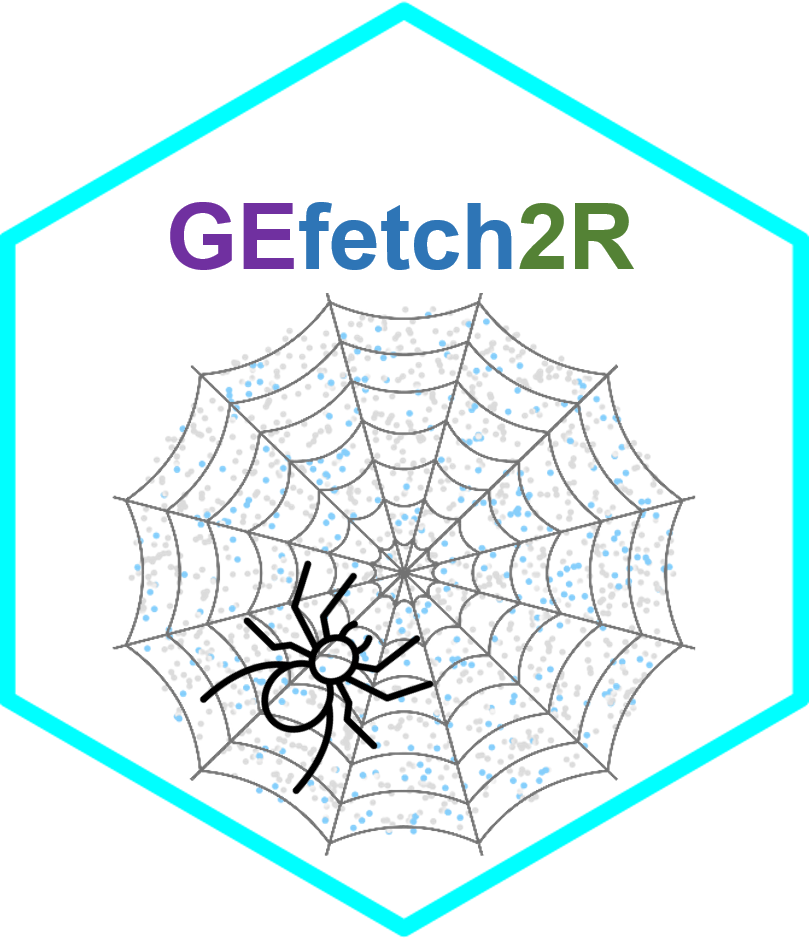

Quick start



Introduction
GEfetch2R is designed to accelerate users’ downloading and preparation of single-cell/bulk RNA-seq datasets from public resources. It can be used to:
For bulk RNA-seq:
- Download raw data (
sra/fastq/bam) fromSRA/ENAwith GEO accession:-
Parallel download
sra/fastq/bamfiles fromSRA/ENA -
Support Aspera (
ENA) -
Parallel split
sratofastqfiles - Convert
bamtofastqfiles - Mapping with
STARand load the output toDESeq2
-
Parallel download
- Download count matrix from
GEOwith GEO accession:- Generate count matrix from supplementary files
- Load the count matrix to
DESeq2
For scRNA-seq:
- Download raw data (
sra/fastq/bam) fromSRA/ENAwith GEO accession:-
Parallel download
sra/fastq/bamfiles fromSRA/ENA -
Foramt downloaded
fastqfiles to standard style that can be identified by 10x softwares (e.g.CellRanger). -
Support Aspera (
ENA) -
Parallel split
sratofastqfiles - Download original 10x generated
bamfiles (with custom tags) - Convert
bamtofastqfiles (samtools/bamtofastq_linux) - Mapping with
STAR/CellRangerand load the output toSeurat
-
Parallel download
- Download count matrix:
- Download count matrix from
GEOwith GEO accession - Download count matrix and annotation (e.g. cell type) information from
PanglaoDBandUCSC Cell Browserwith key words (filter criteria) -
Extract subset with annotation and gene (
PanglaoDBandUCSC Cell Browser)
- Load the count matrix and annotation to
Seurat
- Download count matrix from
- Download processed object:
- Download processed object from
GEOwith GEO accession - Download processed object from
Zenodowith DOI - Download processed object from
CELLxGENEandHuman Cell Atlaswith key words (filter criteria) - Parallel download
- Extract subset with annotation and gene (
CELLxGENE) - Load the processed object (
rds/rdata) toSeurat -
Extract count matrix and metadata from processed object (
rds/rdata), includingSeurat,seurat,SingleCellExperiment,cell_data_set,CellDataSet,DESeqDataSet,DGEList.
- Download processed object from
-
Format conversion and benchmark related tools:
-
Format conversion between widely used single cell objects (
SeuratObject,AnnData,SingleCellExperiment,CellDataSet/cell_data_setandloom) -
Benchmark the tools (more than two tools available for the conversion):
-
SeuratObjecttoAnnData:SeuratDisk,sceasy,scDIOR -
SingleCellExperimenttoAnnData:sceasy,scDIOR,zellkonverter -
AnnDatatoSeuratObject:SeuratDisk,sceasy,scDIOR,schard -
AnnDatatoSingleCellExperiment:schard,scDIOR,zellkonverter
-
-
Format conversion between widely used single cell objects (
Installation
Manual installation
To install GEfetch2R, start R and enter:
# install from GitHub
# install.packages("devtools")
devtools::install_github("showteeth/GEfetch2R")There are some conditionally used R packages:
# install.packages("devtools") #In case you have not installed it.
devtools::install_github("alexvpickering/GEOfastq") # download fastq
install.packages('tiledbsoma', repos = c('https://tiledb-inc.r-universe.dev', 'https://cloud.r-project.org')) # download from CELLxGENE
install.packages('cellxgene.census', repos=c('https://chanzuckerberg.r-universe.dev', 'https://cloud.r-project.org')) # download from CELLxGENE
devtools::install_github("cellgeni/sceasy") # format conversion
devtools::install_github("mojaveazure/seurat-disk") # format conversion
devtools::install_github("satijalab/seurat-wrappers") # format conversion
devtools::install_github('theislab/zellkonverter@7b118653a471330b3734dcfee60c3537352ecb8d', upgrade = 'never') # format conversion
devtools::install_github('cellgeni/schard', upgrade = 'never') # format conversion
devtools::install_github('JiekaiLab/dior', upgrade = 'never') # format conversionFor possible issues about installation, please refer INSTALL.md.
For format conversion and downloading fastq/bam files, GEfetch2R requires additional tools, you can install with:
# install additional packages for format conversion
pip install diopy
conda install -c bioconda loompy anndata
# or
pip install anndata loompy
# install additional packages for downloading fastq/bam files
conda install -c bioconda 'parallel-fastq-dump' 'sra-tools>=3.0.0'
# install bamtofastq, the following installs linux version
wget --quiet https://github.com/10XGenomics/bamtofastq/releases/download/v1.4.1/bamtofastq_linux && chmod +x bamtofastq_linux
# install ascp
conda install -c hcc aspera-cli -y
# ascp path: ~/miniconda3/bin/ascp (path/bin/ascp)
# private-key file : ~/miniconda3/etc/asperaweb_id_dsa.openssh (path/etc/asperaweb_id_dsa.openssh)Docker image
We also provide a docker image to use:
# pull the image
docker pull soyabean/gefetch2r:1.2
# run the image
docker run --rm -p 8888:8787 -e PASSWORD=passwd -e ROOT=TRUE -it soyabean/gefetch2r:1.2Notes:
- After running the above codes, open browser and enter
http://localhost:8888/, the user name isrstudio, the password ispasswd(set by-e PASSWORD=passwd) - If port
8888is in use, change-p 8888:8787 - The
conda.pathinExportSeuratandImportSeuratcan be set/opt/conda. - The sra-tools can be found in
/opt/sratoolkit.3.0.6-ubuntu64/bin. - The
parallel-fastq-dumppath:/opt/conda/bin/parallel-fastq-dump. - The
bamtofastq_linuxpath:/opt/bamtofastq_linux. - The
samtoolspath:/opt/conda/bin/samtools. - The
STARandCell Rangeris not available in the image because customized reference genome is required.
Codes used to test the usability of the Docker image: Docker_test.R
Vignette
Detailed usage is available in website:
- Download raw data (SRA/ENA)
- Download count matrix and annotaion (GEO, PanglaoDB, UCSC Cell Browser)
- Download processed data (GEO, Zenodo, CELLxGENE, Human Cell Atlas)
- Format conversion and benchmark (AnnData, SeuratObject, SingleCellExperiment, CellDataSet/cell_data_set, loom)
Quick start
Check API
Check the availability of APIs used:
# check all databases: "SRA/ENA", "GEO", "PanglaoDB", "UCSC Cell Browser", "Zenodo", "CELLxGENE", "Human Cell Atlas"
CheckAPI()
# for a given database
CheckAPI(database = "GEO")SRA/ENA (sra/fastq/bam)
Extract all runs, automatically identify the RNA-seq type (10x Genomics scRNA-seq, bulk RNA-seq, Smart-seq2 scRNA-seq/mini-bulk RNA-seq) of each sample, download fastq files from ENA, perform read mapping, and load the results to R:
# mixture of 10x Genomics scRNA-seq and bulk RNA-seq
GSE305141.list <- DownloadFastq2R(
acce = "GSE305141", skip.gsm = c("GSM9162729", "GSM9162725"),
star.ref = "/path/to/star/ref", cellranger.ref = "/path/to/cellranger/ref",
star.path = "/path/to/STAR", cellranger.path = "/path/to/cellranger"
)
# given GSM number
GSE127942.list <- DownloadFastq2R(
gsm = c("GSM3656922", "GSM3656923"), star.ref = "/path/to/ref",
star.path = "/path/to/STAR"
)Key parameters:
-
acce: the GEO accession. -
skip.gsm: vector of GSM numbers to skip. -
gsm: the GSM accession (given sample). -
star.ref: path toSTARreference. Used when bulk/Smart-seq2 RNA-seq samples exist. -
star.path: path toSTAR, can be detected automatically bySys.which("STAR"). Used when bulk/Smart-seq2 RNA-seq samples exist. -
cellranger.ref: path tocellrangerreference. Used when 10x Genomics scRNA-seq samples exist. -
cellranger.path: path tocellranger, can be detected automatically bySys.which("cellranger"). Used when 10x Genomics scRNA-seq samples exist. -
out.folder: the output folder, current working directory by default. -
count.col: column contains used count data (2: unstranded (default value);3: stranded=yes / 1st read strand;4: stranded=reverse/2nd read strand), use when bulk RNA-seq or Smart-seq2 scRNA-seq/mini-bulk RNA-seq.
The way GEfetch2R automatically identify the RNA-seq type can be find here. Besides, users can specify the RNA-seq type via force.type, choose one from "10x", "Smart-seq2", "bulk".
The above code equals the following:
# extract all runs
GSE127942.runs <- ExtractRun(acce = "GSE127942")
GSE127942.runs <- GSE127942.runs[GSE127942.runs$gsm_name %in% c("GSM3656922", "GSM3656923"), ]
# download fastq from ENA
GSE127942.down <- DownloadFastq(
gsm.df = GSE127942.runs, out.folder = "/path/to/fastq_out",
download.method = "wget", # available method: "download.file", "ascp", "wget"
parallel = FALSE, format.10x = FALSE # 10x-specific
)
# read mapping, load to R
GSE127942.gsms <- file.path("/path/to/fastq_out", c("GSM3656922", "GSM3656923"))
GSE127942.obj <- Fastq2R(
sample.dir = GSE127942.gsms,
method = "STAR", st.path = "/path/to/STAR", ref = "/path/to/STAR.reference", # STAR reference
out.folder = "/path/to/mapping_out", count.col = 2, # strand-specific (2: unstranded; 3: stranded=yes; 4: stranded=reverse)
localcores = 4
)
# GSE127942.obj is a DESeqDataSet objectGEO (count matrix, metadata, processed object)
Count matrix (bulk RNA-seq/Smart-seq2)
Supplementary file in csv(.gz)/tsv(.gz)/txt(.gz)/tab(.gz)/xlsx(.gz)/xls(.gz) format or tar(.gz) format (contain csv(.gz)/tsv(.gz)/txt(.gz)/tab(.gz)/xlsx(.gz)/xls(.gz) files):
# return SeuratObject
GSE297431.seu <- ParseGEO(
acce = "GSE297431",
supp.idx = 1, # specify the index of used supplementary file
down.supp = TRUE, supp.type = "count",
data.type = "sc", # scRNA-seq, Smart-seq2 here
load2R = TRUE, merge = TRUE
)Key parameters:
-
down.supp = TRUE: generate count matrix from supplementary file -
supp.idx = 1: the first supplementary file containing the count matrix -
supp.type = "count": the file containing count matrix is incsv(.gz)/tsv(.gz)/txt(.gz)/tab(.gz)/xlsx(.gz)/xls(.gz)format -
data.type = "sc": the data type of the dataset, choose from"sc"(single-cell) and"bulk"(bulk) -
load2R = F: return count matrix;load2R = Tanddata.type = "sc", returnSeuratObject;load2R = Tanddata.type = "bulk", returnDESeqDataSet
-
ParseGEOis compatible with count matrices generated by htseq-count, featureCounts (contain extra columns: “Chr”, “Start”, “End”, “Strand”, “Length”, e.g. GSE182219), and STAR with--quantMode(contain three count columns: unstranded, 1st read strand, 2nd read strand, e.g. GSE195839). -
ParseGEOis also compatible with count matrix files containing irregular extra columns, e.g. GSE268038 contains “chromosome”, “start”, “end”, “strand”. Users can specify the extra columns to ignore by settingextra.cols(default: “chr”, “start”, “end”, “strand”, “length”, “width”, “chromosome”, “seqnames”, “seqname”, “chrom”, “chromosome_name”, “seqid”, “stop”) - In general, the rows of the count matrix represent genes, and the columns represent samples.
ParseGEOcan deal with the transposed count matrix (the number of rows is less than the number of columns) by settingtransposeto TRUE.
Count matrix (scRNA-seq)
Supplementary files in h5(.gz) format or composed of barcodes.tsv(.gz)/genes.tsv(.gz), matrix.mtx(.gz), features.tsv(.gz) files (set supp.type = "10xSingle"):
GSE278892.seu <- ParseGEO(
acce = "GSE278892", down.supp = TRUE,
supp.type = "10xSingle", timeout = 36000,
out.folder = "/path/to/store/count_matrix"
)Key parameters:
-
down.supp = TRUE: generate count matrix from supplementary file -
supp.type = "10xSingle": the file containing count matrix is in separate files (barcodes.tsv(.gz)/genes.tsv(.gz),matrix.mtx(.gz),features.tsv(.gz)) orh5(.gz)file(s) -
load2R = F: return count matrix;load2R = Tanddata.type = "sc", returnSeuratObject
Supplementary file in tar(.gz) format (set supp.type = "10x"):
GSE292908.seu <- ParseGEO(
acce = "GSE292908", down.supp = TRUE,
supp.type = "10x", timeout = 36000,
supp.idx = 1, # specify the index of used supplementary file
out.folder = "/path/to/store/count_matrix"
)Key parameters:
-
down.supp = TRUE: generate count matrix from supplementary file -
supp.idx = 1: the first supplementary file containing the count matrix -
supp.type = "10x": the file containing count matrix is intar(.gz)format. The files intar(.gz)can be inzip,tar(.gz),h5(.gz)format, or separate files (barcodes.tsv(.gz)/genes.tsv(.gz),matrix.mtx(.gz),features.tsv(.gz)). -
load2R = F: return count matrix;load2R = Tanddata.type = "sc", returnSeuratObject
-
ParseGEOcan also load count matrices generated by scRNA-seq platforms other than 10x Genomics, which have a similar output structure to 10x (CellRanger), e.g., SeekOne and MobiDrop and DNBelab C4 -
ParseGEOcan handle files with very deep hierarchical structures, e.g. Compressed files (zip, tar.gz, tar) in downloaded supplemental files (GEO, 10x) -
ParseGEOcan identify sample name before or after the fixed name, e.g. Sample name is after the fixed name (GEO, 10x)
Metadata
The sample metadata can be obtained in two ways:
- user-provided sample metadata when uploading to GEO (applicable to all GEO accessions):
# set VROOM_CONNECTION_SIZE to avoid error: Error: The size of the connection buffer (786432) was not large enough
Sys.setenv("VROOM_CONNECTION_SIZE" = 131072 * 60)
# extract metadata
GSE297431.meta <- ExtractGEOMeta(acce = "GSE297431")- metadata in supplementary file:
GSE297431.meta.supp <- ExtractGEOMeta(
acce = "GSE297431", down.supp = TRUE,
supp.idx = 2 # specify the index of used supplementary file
)Processed object
Supplementary file in rdata(.gz)/rds(.gz)/h5ad(.gz)/loom(.gz) format or tar(.gz) format (contain rdata(.gz)/rds(.gz)/h5ad(.gz)/loom(.gz) files):
# return SeuratObject (rds)
GSE285723.seu <- ParseGEOProcessed(
acce = "GSE285723", supp.idx = 1,
file.ext = c("rdata", "rds"), return.seu = T, timeout = 36000000,
out.folder = "/path/to/outfoder"
)Key parameters:
-
supp.idx = 1: the first supplementary file containing the processed object. -
file.ext = c("rdata", "rds"): download/keep files inrdata(.gz)andrds(.gz)formats (case-insensitive). -
return.seu = T: load downloaded objects toSeurat.
Dissect and extract the RData files:
# download the object
ParseGEOProcessed(acce = "GSE244572", timeout = 360000, supp.idx = 1, file.ext = c("rdata", "rds", "h5ad", "loom"))
# process the object
GSE244572.list <- LoadRData(
rdata = "GSE244572/GSE244572_RPE_CITESeq.RData",
accept.fmt = c("Seurat", "seurat", "SingleCellExperiment", "cell_data_set", "CellDataSet", "DESeqDataSet", "DGEList"),
slot = "counts", return.obj = TRUE
)Key parameters:
-
accept.fmt: vector, the format of objects for dissecting and extracting. -
slot: vector, the type of count matrix to pull.'counts': raw, un-normalized counts,'data': normalized data,scale.data: z-scored/variance-stabilized data. -
return.obj: logical value, whether to load the available objects inaccept.fmtto global environment.
The way GEfetch2R dissect and extract the RData files can be find here.
PanglaoDB (count matrix, cell type composition)
Given dataset
# extract cell type composition
lung.composition <- ExtractPanglaoDBComposition(sra = "SRA570744")
# extract count matrix and load to Seurat
lung.seu <- ParsePanglaoDB(sra = "SRA570744", srs = "SRS2253536")Filter samples based on metadata
# summarise attributes
StatDBAttribute(df = PanglaoDBMeta, filter = c("species", "protocol"), database = "PanglaoDB")
# filter metadata
hsa.meta <- ExtractPanglaoDBMeta(species = "Homo sapiens", protocol = c("Smart-seq2", "10x chromium"),
show.cell.type = TRUE, cell.num = c(1000, 2000))
# extract cell type composition
hsa.composition <- ExtractPanglaoDBComposition(meta = hsa.meta)
# download matrix and load to Seurat, small test
hsa.seu <- ParsePanglaoDB(hsa.meta[1:3,], merge = TRUE)UCSC Cell Browser (count matrix, cell type composition)
Given dataset
# extract cell type composition
ut.sample.ct <- ExtractCBComposition(link = c(
"https://cells.ucsc.edu/?ds=adult-ureter", # collection
"https://cells.ucsc.edu/?ds=adult-testis" # dataset
))
# extract count matrix and load to Seurat
ut.seu <- ParseCBDatasets(link = c(
"https://cells.ucsc.edu/?ds=adult-ureter", # collection
"https://cells.ucsc.edu/?ds=adult-testis" # dataset
), merge = TRUE)-
merge = TRUE: whether to mergeSeuratlist.
Filter samples based on metadata
# first-time run, get all samples and store json to json.folder
ucsc.cb.samples = ShowCBDatasets(lazy = TRUE, json.folder = "/path/to/json", update = TRUE)
# second-time run, use stored json
# ucsc.cb.samples = ShowCBDatasets(lazy = TRUE, json.folder = "/path/to/json", update = FALSE)
# summarise attributes
StatDBAttribute(
df = ucsc.cb.samples, filter = c("organism", "organ"),
database = "UCSC", combine = TRUE
)
# filter metadata
hbb.sample.df <- ExtractCBDatasets(
all.samples.df = ucsc.cb.samples, organ = c("skeletal muscle"),
organism = "Human (H. sapiens)", cell.num = c(1000, 2000)
)
# extract cell type
hbb.sample.ct <- ExtractCBComposition(
json.folder = "/path/to/json",
meta = hbb.sample.df
)
# parse the whole datasets
hbb.sample.seu <- ParseCBDatasets(meta = hbb.sample.df)
# subset metadata and gene
hbb.sample.seu <- ParseCBDatasets(
meta = hbb.sample.df, obs.value.filter = "Cell.Type == 'MP' & Phase == 'G2M'",
include.genes = c(
"PAX7", "MYF5", "C1QTNF3", "MYOD1", "MYOG", "RASSF4", "MYH3", "MYL4",
"TNNT3", "PDGFRA", "OGN", "COL3A1"
)
)Zenodo (processed object)
# extract metadata
multi.dois <- ExtractZenodoMeta(doi = c("1111", "10.5281/zenodo.7243603", "10.5281/zenodo.7244441"))
# download objects
multi.dois.parse <- ParseZenodo(
doi = c("1111", "10.5281/zenodo.7243603", "10.5281/zenodo.7244441"),
file.ext = c("rdata"), timeout = 36000000,
out.folder = "/path/to/download_zenodo"
)
# return SeuratObject
sinle.doi.parse.seu <- ParseZenodo(
doi = "10.5281/zenodo.8011282",
file.ext = c("rds"), return.seu = TRUE, timeout = 36000000,
out.folder = "/path/to/download_zenodo"
)-
return.seu = T: load downloaded objects toSeurat.
dissect and extract the RData files
CELLxGENE (processed object)
Given dataset
CELLxGENE does not support downloading SeuratObject in versions after 2025. The following code can only download h5ad files.
# download h5ad files
cellxgene.given.h5ad <- ParseCELLxGENE(
link = c(
"https://cellxgene.cziscience.com/collections/77f9d7e9-5675-49c3-abed-ce02f39eef1b", # collection
"https://cellxgene.cziscience.com/e/e12eb8a9-5e8b-4b59-90c8-77d29a811c00.cxg/" # dataset
),
timeout = 36000000,
out.folder = "/path/to/download_cellxgene"
)Filter samples based on metadata
We have downloaded all the CELLxGENE datasets in May 2025 and stored in all.cellxgene.datasets.rds. The all.cellxgene.datasets.rds contains the SeuratObject.
# all available datasets
all.cellxgene.datasets <- ShowCELLxGENEDatasets()
# the datasets with SeuratObject
# wget https://github.com/showteeth/GEfetch2R/raw/ff2f19f3b557f90fce5f8bf2f8662cebdfd04298/man/benchmark/all.cellxgene.datasets.rds
all.cellxgene.datasets <- readRDS("all.cellxgene.datasets.rds")
# summarise attributes
StatDBAttribute(
df = all.cellxgene.datasets, filter = c("organism", "sex", "disease"),
database = "CELLxGENE", combine = TRUE
)
# use cellxgene.census
# StatDBAttribute(filter = c("disease", "tissue", "cell_type"), database = "CELLxGENE", use.census = TRUE, organism = "homo_sapiens")
# human 10x v2 and v3 datasets
human.10x.cellxgene.meta <- ExtractCELLxGENEMeta(
all.samples.df = all.cellxgene.datasets,
assay = c("10x 3' v2", "10x 3' v3"), organism = "Homo sapiens"
)
# subset
cellxgene.down.meta <- human.10x.cellxgene.meta[human.10x.cellxgene.meta$cell_type == "oligodendrocyte" &
human.10x.cellxgene.meta$tissue == "entorhinal cortex", ]
# download objects
cellxgene.down <- ParseCELLxGENE(
meta = cellxgene.down.meta, file.ext = "rds", timeout = 36000000,
out.folder = "/path/to/download_cellxgene"
)
# retuen SeuratObject
cellxgene.down.seu <- ParseCELLxGENE(
meta = cellxgene.down.meta, file.ext = "rds", return.seu = TRUE, timeout = 36000000,
obs.value.filter = "cell_type == 'oligodendrocyte' & disease == 'Alzheimer disease'",
obs.keys = c("cell_type", "disease", "sex", "suspension_type", "development_stage"),
out.folder = "/path/to/download_cellxgene"
)Human Cell Atlas (processed object)
Given dataset
# download objects
hca.given.download <- ParseHCA(
link = c(
"https://explore.data.humancellatlas.org/projects/902dc043-7091-445c-9442-d72e163b9879",
"https://explore.data.humancellatlas.org/projects/cdabcf0b-7602-4abf-9afb-3b410e545703"
), timeout = 36000000,
out.folder = "/path/to/download_hca"
)dissect and extract the RData files
Filter samples based on metadata
# all available datasets
all.hca.projects <- ShowHCAProjects()
# summarise attributes
StatDBAttribute(df = all.hca.projects, filter = c("organism", "sex"), database = "HCA")
# filter metadata
hca.human.10x.projects <- ExtractHCAMeta(
all.projects.df = all.hca.projects, organism = "Homo sapiens",
protocol = c("10x 3' v2", "10x 3' v3")
)
# small test
hca.human.10x.down = ParseHCA(meta = hca.human.10x.projects[1:3,],
out.folder = "/path/to/download_hca",
file.ext = c("h5ad", "rds"), timeout = 36000000)dissect and extract the RData files
Format conversion
There are many tools have been developed to process scRNA-seq data, such as Scanpy, Seurat, scran and Monocle. These tools have their own object formats, such as Anndata of Scanpy, SeuratObject of Seurat, SingleCellExperiment of scran and CellDataSet/cell_data_set of Monocle2/Monocle3. There are also some file formats designed for large omics datasets, such as loom. To perform a comprehensive scRNA-seq data analysis, we usually need to combine multiple tools, which means we need to perform object format conversion frequently. To facilitate user analysis of scRNA-seq data, GEfetch2R benchmarked the format conversion tools (Anndata -> SeuratObject, SeuratObject to Anndata, Anndata to SingleCellExperiment, SingleCellExperiment to Anndata), and provides multiple functions to perform format conversion.
Test data
SeuratObject:
# object
pbmc_smallSingleCellExperiment:
seger <- scRNAseq::SegerstolpePancreasData()Convert SeuratObject to other objects
Here, we will convert SeuratObject to SingleCellExperiment, CellDataSet/cell_data_set, Anndata, loom.
SeuratObject to SingleCellExperiment
The conversion is performed with functions implemented in Seurat:
sce.obj <- ExportSeurat(seu.obj = pbmc_small, assay = "RNA", to = "SCE")SeuratObject to CellDataSet/cell_data_set
To CellDataSet (The conversion is performed with functions implemented in Seurat):
# BiocManager::install("monocle") # reuqire monocle
cds.obj <- ExportSeurat(seu.obj = pbmc_small, assay = "RNA", reduction = "tsne", to = "CellDataSet")To cell_data_set (The conversion is performed with functions implemented in SeuratWrappers):
# remotes::install_github('cole-trapnell-lab/monocle3') # reuqire monocle3
cds3.obj <- ExportSeurat(seu.obj = pbmc_small, assay = "RNA", to = "cell_data_set")SeuratObject to AnnData
There are multiple tools available for format conversion from SeuratObject to Anndata:
-
scDIORis the best method in terms of information kept and usability -
sceasyhas best performance in running time and disk usage.
# SeuratDisk
Seu2AD(seu.obj = pbmc_small, method = "SeuratDisk", out.folder = "out.folder",
assay = "RNA", save.scale = TRUE)
# sceasy
Seu2AD(seu.obj = pbmc_small, method = "sceasy", out.folder = "out.folder",
assay = "RNA", slot = "counts", conda.path = "/path/to/conda")
# scDIOR
Seu2AD(seu.obj = pbmc_small, method = "scDIOR",
out.folder = "out.folder", assay = "RNA", save.scale = TRUE)SeuratObject to loom
The conversion is performed with functions implemented in SeuratDisk:
loom.file <- tempfile(pattern = "pbmc_small_", fileext = ".loom")
ExportSeurat(
seu.obj = pbmc_small, assay = "RNA", to = "loom",
loom.file = loom.file
)Convert other objects to SeuratObject
SingleCellExperiment to SeuratObject
The conversion is performed with functions implemented in Seurat:
seu.obj.sce <- ImportSeurat(obj = sce.obj, from = "SCE",
count.assay = "counts", data.assay = "logcounts",
assay = "RNA")CellDataSet/cell_data_set to SeuratObject
CellDataSet to SeuratObject (The conversion is performed with functions implemented in Seurat):
seu.obj.cds <- ImportSeurat(obj = cds.obj, from = "CellDataSet",
count.assay = "counts", assay = "RNA")cell_data_set to SeuratObject (The conversion is performed with functions implemented in Seurat): {r cds2seu2, eval=FALSE} seu.obj.cds3 <- ImportSeurat(obj = cds3.obj, from = "cell_data_set", count.assay = "counts", data.assay = "logcounts", assay = "RNA")
AnnData to SeuratObject
There are multiple tools available for format conversion from AnnData to SeuratObject:
-
scDIORis the best method in terms of information kept (GEfetch2RintegratesscDIORandSeuratDiskto achieve the best performance in information kept) -
schardis the best method in terms of usability -
schardandsceasyhave comparable performance when cell number below 200k, butsceasyhas better performance in scalability -
sceasyhas better performance in disk usage
# SeuratDisk
ann.seu <- AD2Seu(anndata.file = "pbmc3k.h5ad", method = "SeuratDisk",
assay = "RNA", load.assays = c("RNA"))
# sceasy
ann.sceasy <- AD2Seu(anndata.file = "pbmc3k.h5ad", method = "sceasy",
assay = "RNA", slot = "scale.data")
# scDIOR
ann.scdior <- AD2Seu(anndata.file = "pbmc3k.h5ad", method = "scDIOR",
assay = "RNA")
# schard
ann.schard <- AD2Seu(anndata.file = "pbmc3k.h5ad",
method = "schard", assay = "RNA", use.raw = T)
# SeuratDisk+scDIOR
ann.seuscdior <- AD2Seu(anndata.file = "pbmc3k.h5ad", method = "SeuratDisk+scDIOR",
assay = "RNA", load.assays = c("RNA"))loom to SeuratObject
The conversion is performed with functions implemented in SeuratDisk and Seurat:
# loom will lose reduction
seu.obj.loom <- ImportSeurat(loom.file = loom.file, from = "loom")Conversion between SingleCellExperiment and AnnData
SingleCellExperiment to AnnData
There are multiple tools available for format conversion from SingleCellExperiment to AnnData:
-
zellkonverteris the best method in terms of information kept and running time -
scDIORis the best method in terms of usability and disk usage
# sceasy
SCE2AD(sce.obj = seger, method = "sceasy", out.folder = "benchmark",
slot = "rawcounts", conda.path = "/path/to/conda")
# scDIOR
seger.scdior <- seger
library(SingleCellExperiment)
# scDIOR does not support varm in rowData
rowData(seger.scdior)$varm <- NULL
SCE2AD(sce.obj = seger.scdior, method = "scDIOR", out.folder = "benchmark")
# zellkonverter
SCE2AD(sce.obj = seger, method = "zellkonverter",
out.folder = "benchmark", slot = "rawcounts",
conda.path = "/path/to/conda")AnnData to SingleCellExperiment
There are multiple tools available for format conversion from AnnData to SingleCellExperiment:
-
zellkonverteris the best method in terms of information kept -
schardis the best method in terms of usability and running time -
schardandscDIORhave comparable performance in disk usage
# scDIOR
sce.scdior <- AD2SCE(anndata.file = "pbmc3k.h5ad", method = "scDIOR",
assay = "RNA", use.raw = TRUE, conda.path = "/path/to/conda")
# zellkonverter
sce.zell <- AD2SCE(anndata.file = "pbmc3k.h5ad", method = "zellkonverter",
slot = "scale.data", use.raw = TRUE, conda.path = "/path/to/conda")
# schard
sce.schard <- AD2SCE(anndata.file = "pbmc3k.h5ad",
method = "schard", use.raw = TRUE)Conversion between SingleCellExperiment and loom
The conversion is performed with functions implemented in LoomExperiment.
SingleCellExperiment to loom
# remove seger.loom first
seger.loom.file <- tempfile(pattern = "seger_", fileext = ".loom")
SCELoom(
from = "SingleCellExperiment", to = "loom", sce = seger,
loom.file = seger.loom.file
)loom to SingleCellExperiment
seger.loom <- SCELoom(
from = "loom", to = "SingleCellExperiment",
loom.file = seger.loom.file
)Contact
For any question, feature request or bug report please write an email to songyb0519@gmail.com.
Code of Conduct
Please note that the GEfetch2R project is released with a Contributor Code of Conduct. By contributing to this project, you agree to abide by its terms.